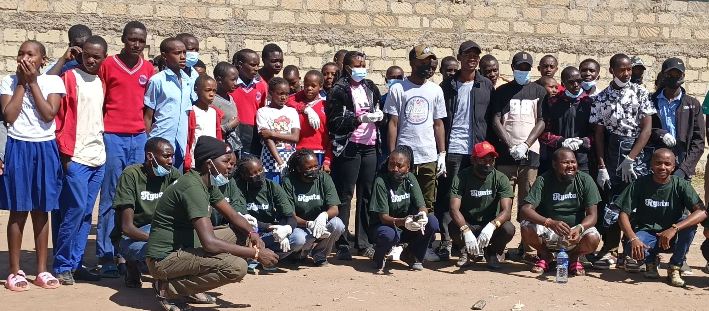
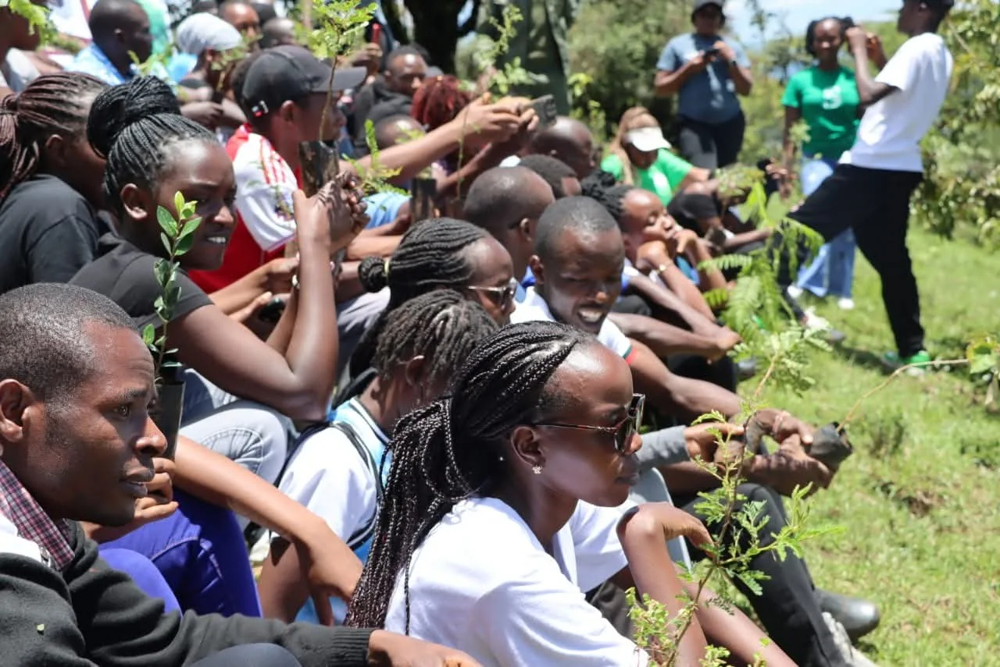
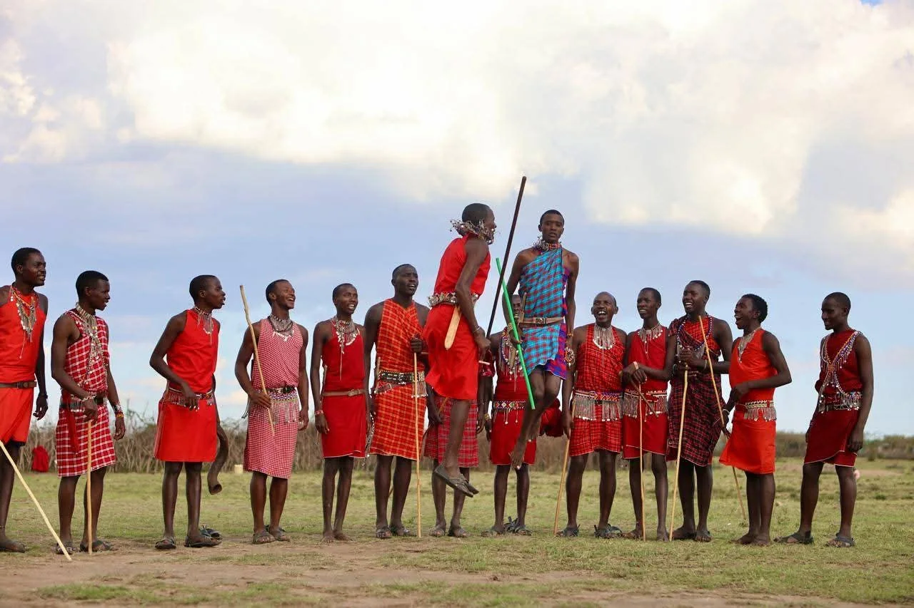
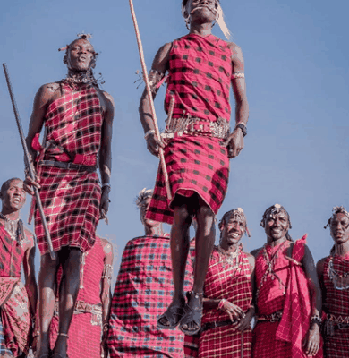
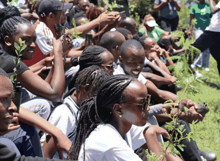

Our mission
To connect and empower young people through learning, collective action and opportunities that strengthen the Sekenani community.
ACTION WITH PURPOSE ↗
When young people come together, extraordinary things become possible. A community-first movement to educate, empower and build tomorrow.


We are Sekenani Youth Self Empowerment Group — a self-help group based in Sekenani, Kenya, with a belief that meaningful change begins with the people who call a place home.
Our focus brings youth leadership, practical community service, learning, environmental care and Maasai cultural heritage into one shared vision. We believe that when young people are included, supported and given room to lead, entire communities can move forward.
Not just a group.
A generation making a difference.
Our strength is in community: young people showing up, learning together and turning everyday action into a better tomorrow.
Six connected areas of focus. One shared ambition: a stronger, more empowered community.

OUR HERITAGE, OUR STRENGTHSekenani is more than a place on the map. It is where stories are shared, traditions are lived, friendships are formed and a new generation imagines what comes next.
Our work looks forward without losing sight of where we come from — connecting cultural pride with opportunities for community progress.
See our community ↗A window into community participation, cultural heritage and the landscapes we care about.
Showing 10 moments

LOOPING MOMENT
LOOPING MOMENTThese are the principles that guide how we hope to make a lasting difference — with people at the centre of every step.
To connect and empower young people through learning, collective action and opportunities that strengthen the Sekenani community.
A thriving community where young people are confident leaders, cultural heritage is valued and people and nature can flourish together.
Collaboration, integrity, inclusion, cultural pride, responsibility and the belief that positive change begins with participation.
Whether you bring your time, your ideas or an opportunity to collaborate, there is more than one way to help move our community forward.
We love hearing from people who care about youth empowerment and community-led change.
Send us an email ↗We are based in Sekenani, in the Maasai Mara area of Narok County, Kenya.
Our areas of interest include youth empowerment and skills, education and mentorship, clean-ups and environmental care, cultural heritage and wildlife coexistence.
We welcome conversations about volunteering, ideas and partnerships. Contact us with your interests and availability so we can discuss what may be possible.
Reach out directly by phone or email to discuss current needs and appropriate ways to collaborate. No online payment or donation collection is enabled on this website.
Call +254 711 624 420, email sekenaniyouth@gmail.com or use the form below to prepare an email.
Have an idea? Want to volunteer? Looking to partner with a youth-led community group? We'd love to hear from you.